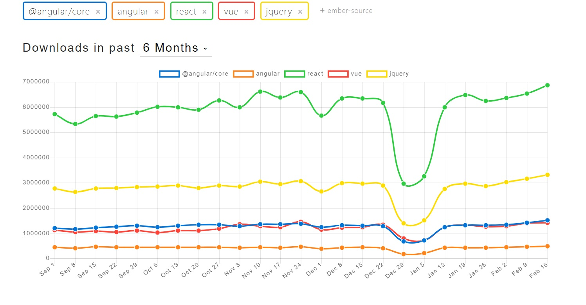
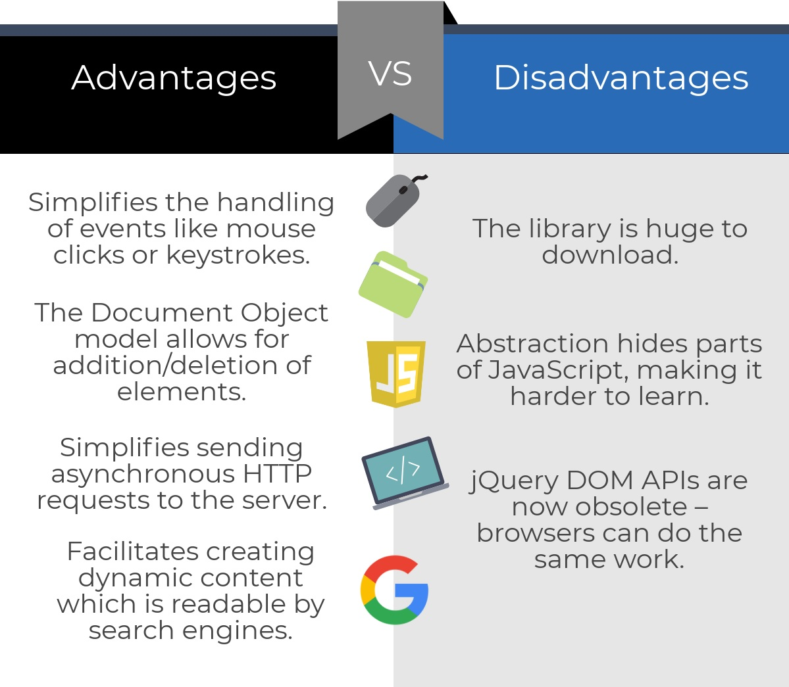
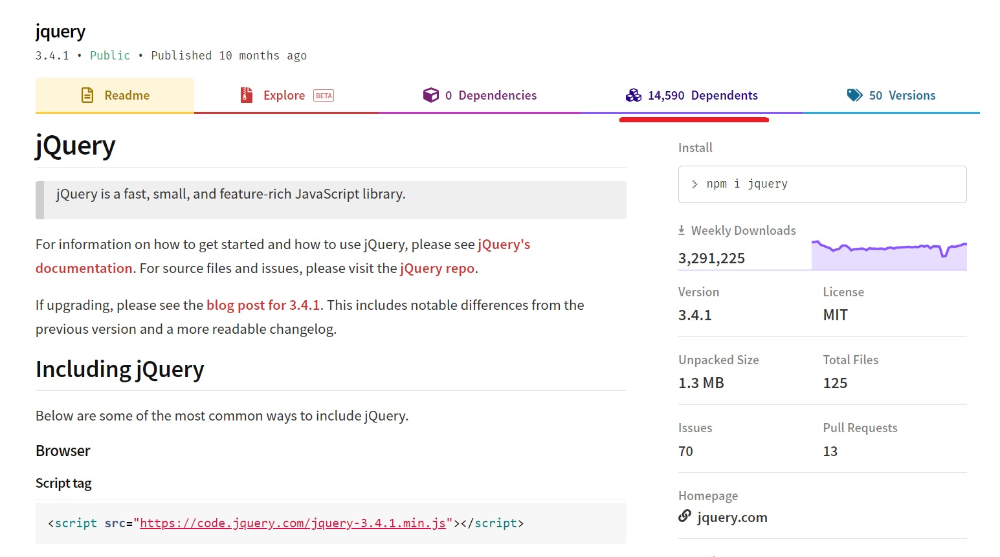

JQuery
class: center, middle #jQuery --- ## What is jQuery? jQuery is a lightweight, "write less, do more", JavaScript library. The purpose of jQuery is to make it much easier to use JavaScript on your website. jQuery takes a lot of common tasks that require many lines of JavaScript code to accomplish, and wraps them into methods that you can call with a single line of code. It also simplifies a lot of the complicated things from JavaScript, like AJAX calls and DOM manipulation. --- ## History Why did jQuery become so popular in the first place? First, jQuery was born in a world where JavaScript applications weren’t a thing. In the early-mid 2000s JavaScript was mainly used to power slideshows and other widgets that appeared inside a page, like image galleries, date pickers and so on. It wasn’t powerful enough to do a lot of things without being too slow (computers were slower too, of course). Browsers at the time had a lot of interoperability issues. We had lots of cross-browser quirks and standardization issues, and jQuery helped us by creating an abstraction layer and taking care of al the workarounds. jQuery allowed you to select DOM elements using the CSS selectors syntax, it was very user friendly and very simple to extend. It made JavaScript animations simple. It also helped simplify working with AJAX (and its cross-browser differences) at a time when this term was super popular, and this also gave jQuery a nice boost in term of popularity. --- ## Statistics  --- ## Features - HTML/DOM traversal and manipulation (alternative to getElementsBySelector) -- under the box - Sizzle selector-parser framework - CSS manipulation - HTML events handling - Ajax - Effects and animations - Extensibility (over plugins) https://sizzlejs.com/ --- ##Get Started Add downloaded library ```html <script src="jquery-3.4.1.min.js"></script> ``` or use jQuery/Google/Microsoft Content Delivery Networks (CDNs) ```html <script src="https://ajax.googleapis.com/ajax/libs/jquery/3.4.1/jquery.min.js"></script> ``` or use npm ```javascript npm install jquery ``` or yarn ```javascript yarn add jquery ``` https://developer.mozilla.org/en-US/docs/Web/Security/Subresource_Integrity --- ##The focus of jQuery ```javascript $('#purchase_btn').addClass('focal'); ``` - $() - call jQuery - '#someid' - get elements with css like selector - .addClass() - do something to selected elements --- ##Selectors ###Basic ```css '*', elementTag, #id, .class ``` ###Hierarchy ```css parent > child, prev + next, prev ~ siblings ``` --- ##Selectors ###Filters ```css :not(), :empty :hidden /* display: none, type="hidden", width & height = 0, ancestor is hidden */ :visible /* are visible */ :parent /* are parents to other elements, including text node */ :contains() /* contain the specified text */ :has() /* contain at least one element that matches the specified selector */ ``` <s> ```css :even, :odd, :first, :last :gt() /* all elements at an index greater then specified */ :lt() /* all elements at an index less then specified */ ``` </s> https://api.jquery.com/category/deprecated/ --- ##Selectors ###Attribute ```css [name], [name|='value'], [name*='value'], [name~='value'], [name$='value'], [name^='value'] [name!='value'] /* either no such attribute or specified value */ ``` https://api.jquery.com/category/selectors/attribute-selectors/ https://css-tricks.com/attribute-selectors/ ###Child filters ```css :first-child, :last-child, :only-child, :first-of-type, :last-of-type, :only-of-type, :nth-child(), :nth-last-child(), :nth-last-of-type(), :nth-of-type() ``` https://api.jquery.com/category/selectors/child-filter-selectors/ https://css-tricks.com/pseudo-class-selectors/ --- ##Selectors ###Forms ```css :button, :checkbox, :file, :image, :input, :password, :radio, :reset, :submit, :text, :disabled, :enabled, :focus, :checked, :selected ``` https://api.jquery.com/category/selectors/form-selectors/ --- ###Traversing Though traversing is quite a powerfull tool, it is wiser not to abbuse it too much. Overcomplicated selectors are hard to understand and affect performance. Note: find() is an exception, sometimes gives performance benefits ```javascript is(), not(), has() eq(), first(), last() find(), parent(), parents(), closest() children(), prev(), next(), siblings() ``` https://api.jquery.com/category/traversing/ --- ##DOM manipulations ###Attributes ```javascript attr(), prop(), val(), data() removeAttr(), removeProp() ``` Note: as lots of other methods, could be used as both getters and setters ```javascript $('input').attr('type'); // "checkbox" $('input').attr('disabled', true); // [<input type="text" disabled="disabled">] ``` ###CSS ```javascript css() // sets inline style. ( { 'top' : 5, 'right' : 4 } ) or ( 'top', 5 ) addClass(), removeClass(), hasClass() toggleClass(), $(element).hasClass(class) ? removeClass(class) : addClass(class) ``` --- ##DOM manipulations ```javascript html(), text() // get/set html/text $('<div>') // create element remove() // removes element from DOM append(), prepend() // insert specified content to the end/beginning of element after(), before() // insert content after/before element height(), width() // get/set value clone() // create a deep copy of an element wrap() // wrap element with another element detach() // same as remove but keeps all jQuery related data ``` https://api.jquery.com/category/manipulation/ --- ###The Document Ready Event Specify a function to execute when the DOM is fully loaded. ```javascript $( document ).ready(function() { // Handler for .ready() called. }); $(function() { // Handler for .ready() called. }); ``` https://learn.javascript.ru/onload-ondomcontentloaded --- ##Animation ```javascript hide(), show(), toggle() fadeOut(), fadeIn(), fadeToggle() slideOut(), slideDown(), slideToggle() ``` Note: all of these methods accept configurations, e.g {duration: 500} animate() - animates given css properties. Note: in most cases it is wiser to use css animations as those are much faster https://api.jquery.com/category/effects/ --- ##Events ###Event Handlers on(), off(), one(), trigger() ###Form Events focus(), blur(), change(), submit() ###Keyboard Events keydown(), keyup(), keypress() https://api.jquery.com/category/events/ --- ##Events ###Mouse Events click(), dblclick(), hover() ###Event Object event.preventDefault(), event.stopPropagation(), event.target Note: some events can be used as both handlers and triggers $('input').focus(handler) -> attaches handler onFocus $('input').focus() -> sets focus on input --- ##Ajax ###Basic usage ```javascript $.ajax({ type: 'POST', url: 'authorization.php', data: { login: 'John', password: 'gfhjkm' }, success: onSuccess, error: onError, complete: onComplete }); ``` ###Shorthand methods ```javascript $.get(), $.post() $.getJSON(), $.getScript() ``` https://api.jquery.com/category/ajax/ --- ##Utilities ```javascript $.each() // generic iterator function $.extend() // merge the content of second+ objects into first one $.trim() // remove whitespace from the beginning and end of a string $.isArray(), $.isEmptyObject(), $.isFunction(), $.isNumeric() $.parseHTML(), $.parseJSON() ``` https://api.jquery.com/category/utilities/ --- ##jQuery Plugins One of the reasons jQuery gained so much popularity is the ease of creating plugins. Which led to a huge collection of available plugins. As a tradeoff, lots of those plugins are poorly coded and rarely properly maintained. ```javascript $.fn.paintMe = function(color){ this.css('background', color); return this; } $('p').paintMe('red').text('ima red!!'); ``` --- ## Pros and cons  --- ## Dependencies  --- ##Let's make a quiz http://www.w3schools.com/quiztest/quiztest.asp?qtest=jQuery --- ##Resources - https://oscarotero.com/jquery/ - http://learn.jquery.com/plugins/basic-plugin-creation/ - http://try.jquery.com/ - http://james.padolsey.com/jquery/#v=2.0.3&fn= - http://blog.garstasio.com/you-dont-need-jquery/ - http://zeptojs.com/ Additional material: Weather application - https://drive.google.com/open?id=1SOwi7t4Toju5a2zMuyMvWvXmICYA6tCf